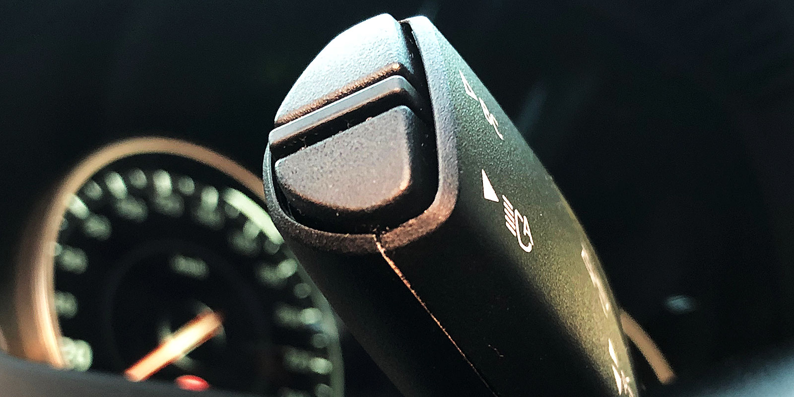
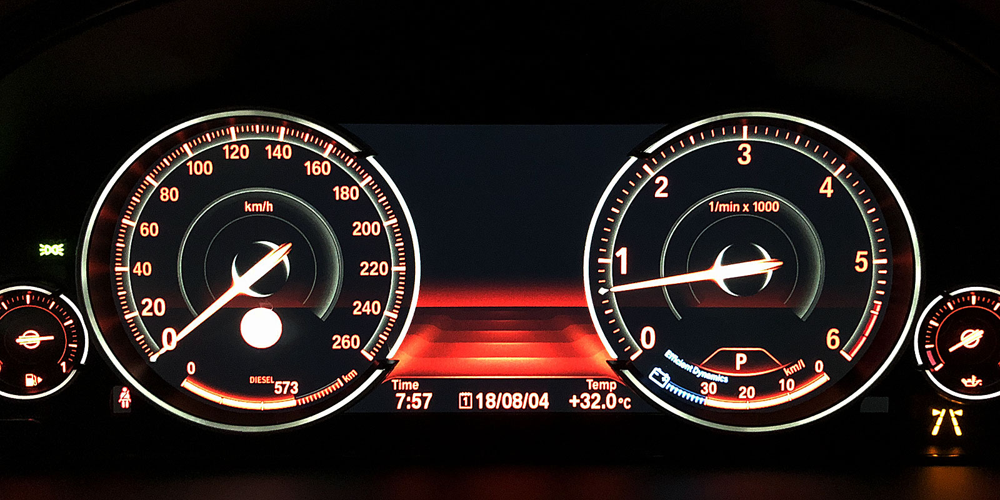
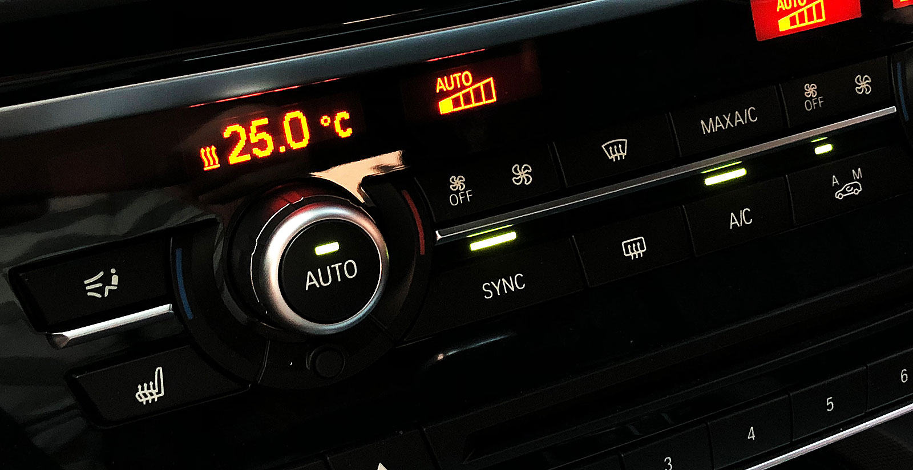

BMW의 SUV인 X5(F15)를 단종 직전 뒤늦게 구입했다. 기존에 타던 차량이 잔고장이 심해져, 당장 빠르게 인수할 수 있는 차종 중에 고르다 보니 사고 싶던 차종 목록에 없던 X5를 구매하게 되었다.
해당 차종에 대해 충분히 알아보지 않은 탓에, 구매하고 나서야 알게 된 장단점들이 있다.
방향 지시등 조작이 불편하고 마감이 좋지 않다

G 코드 전의 BMW 차량은 방향 지시등이 다른 차종들과는 다르게 토글 방식이라, 레버를 조작해도 위/아래에 위치했다 돌아오는 방식이 아니라, 조작 후 바로 원래 위치로 돌아오는 방식이다. 행여나 자동으로 꺼지지 않은 경우, 위/아래 방향으로 ‘살짝’ 움직여 꺼야 하는데, 이 ‘살짝’이 너무 애매하다 보니 불편하다. 이것만으로도 이미 여간 신경 쓰이는 게 아닌데 마감까지 좋지 않다. 우회전을 위해 레버를 아래에서 위로 조작해야 하는 경우 레버의 아래쪽이 손에 닿게 되는데 플라스틱 부품 사이가 벌어져 있고, 마감이 날카로워 손가락에 닿을 때마다 매우 불쾌하다.
계기판 가운데가 텅 비어 시각적으로 휑하다

전체 LCD로 구성된 계기판인데, 어댑티브 크루즈 콘트롤(ACC) 기능이 없는 등급이다 보니 계기판 중앙이 쓸모가 없고 항상 덩그러니 비어있게 된다. 오히려 전체 LCD가 아닌 기존 세대 계기판에서는 중앙에 시계, 연비, 날짜 등의 여러 정보를 동시에 표시하고 있었던 반면, 현세대에서는 그중 하나만 골라 아래에 표시할 수 있을 뿐이다. ACC가 장착된 모델인 경우에는 앞차와의 거리를 설정하고 표시하는 영역으로 사용된다.
그 외 또 사소한 단점들이 있다면,
- 동급 SUV 들 중에서도 차고가 높은 편이라 타고 내릴 때 불편하다. 사이드 스텝을 출고 이후에도 설치할 수 있지만, 미관을 해치는 것 같다.
- F 코드 차량들은 사이드 미러가 차량 잠금시 자동으로 접히지 않는다. 설정할 수도 없고, 자동차 키나 도어 캐치의 버튼을 3초간 누르고 있어야 사이드 미러가 접힌다.
- 음소거(mute)가 아예 없다. 센터페시아의 볼륨 조정 버튼을 눌러 오디오 기능을 끄는 것이 유일한 방법.
- 드라이브 모드를 SPORT 모드로 바꾸면 계기판에 현재 출력이 마력으로 표시되는데, 최대 출력으로 320이라는 숫자가 표시되어 있지만 40d에서나 해당하는 내용이고, 30d는 제원상 258마력이다.
- 앞 좌석 통풍 시트가 없다. 역시 30d에만 해당하는 내용.
단점만 있는 건 아니고 의외의 장점도 발견했다.
공조기 자동 상태에서도 풍량을 조정할 수 있다

기존에 타던 차들은 공조기를 자동으로 설정한 상태에서 온도 변경, 풍량 조정, 내기 순환 등을 변경하면 1) 자동 모드가 해제되거나 2) 풍량이 특정 세기에 고정되었었다. 이에 비해, 자동 모드에서도 지정한 온도에 도달하기까지 풍량을 원하는 정도로 조정이 가능하다. 다른 제조사의 차종에서는 자동으로 설정한 상태에서 풍량을 1로 조정하면, 말 그대로 바람의 세기가 1로 고정되는 반면, X5에서는 1의 속도로 목표 온도에 도달하겠다는 의미가 된다. 이 상태에서도 풍량은 자동으로 강해졌다 약해졌다 한다. 커뮤니티에서는 이 방식이 불편하다는 의견이 더 많은 편.
그 외 (특정 년식의 모델에만 해당하는 내용도 포함하여),
- 덩치가 좀 크다보니, 전후 좌우를 모두 보여주는 서라운드 뷰가 꽤 쓸모있다.
- 뒷 서스펜션이 상위 모델과 같이 에어 서스펜션으로 변경되었다고 한다.
- 기본으로 장착된 라우드 하이파이 스피커가 BMW의 최하등급 스피커들과 비교하면 비교적 괜찮은 편이다.
- 런플랫 타이어다 보니 트렁크 아래 공간이 비어있는데, 기존에 타던 SUV의 트렁크에 넣고 다니던 짐 대부분을 소화할 정도로 넓다.